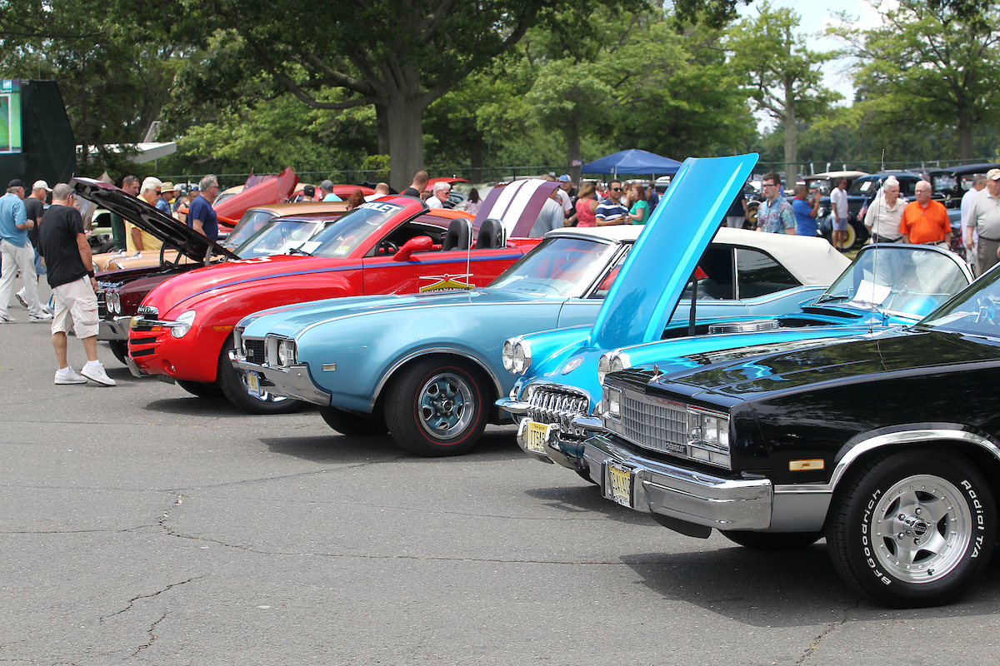
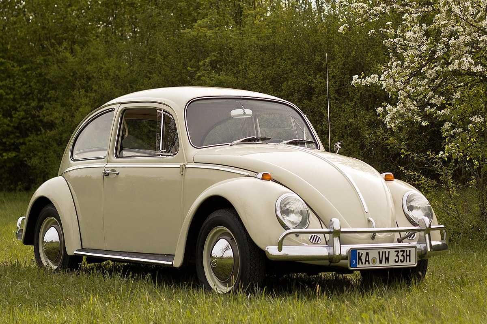

The Timeless Beauty of the Ford Model T
The Ford Model T, produced from 1908 to 1927, is often regarded as the first affordable automobile. Its revolutionary assembly line production made car ownership accessible to the masses. The Model T was designed to be simple, reliable, and easy to maintain, which contributed to its immense popularity.
With over 15 million units sold, the Model T transformed the automotive industry and American society. It allowed families to travel further and faster than ever before, changing the landscape of the United States. Today, the Model T is celebrated not only for its engineering but also for its cultural impact, symbolizing freedom and mobility.
 Read more...
Read more...
Classic Car Shows: A Celebration of Automotive History
Classic car shows are a great way to celebrate automotive history. Enthusiasts gather to showcase their vintage cars, share stories, and connect with fellow collectors. These events often feature a wide range of vehicles, from pre-war classics to muscle cars of the 1960s and 70s.
Attending a classic car show is not just about admiring the vehicles; it's also an opportunity to learn about the history and restoration of these cars. Many shows include competitions, where cars are judged based on their condition, originality, and craftsmanship. For many, these events foster a sense of community and passion for preserving automotive heritage.

Read more...
Restoration Tips for Vintage Car Owners
Restoring a vintage car can be a rewarding experience, but it requires patience, dedication, and a good understanding of automotive mechanics. Here are some essential tips for owners looking to bring their classic cars back to life:
- Research Your Model: Understand the history and specifications of your car model. Join forums and clubs to connect with other enthusiasts.
- Set a Budget: Restoration can be costly. Plan your budget carefully, considering parts, labor, and unexpected expenses.
- Source Quality Parts: Look for original or high-quality reproduction parts. Online marketplaces, specialty shops, and salvage yards can be great resources.
- Document the Process: Keep a detailed record of your restoration process. This not only helps with future repairs but also adds value to the car.
- Join a Community: Engage with local car clubs or online communities. They can provide support, advice, and camaraderie throughout your restoration journey.
With the right approach, restoring a vintage car can be a fulfilling project that results in a beautiful vehicle that you can enjoy for years to come.
Read more...
The Iconic Volkswagen Beetle: A Cultural Phenomenon
The Volkswagen Beetle, produced from 1938 to 2003, is one of the best-selling cars of all time. Its unique design and cultural significance make it a beloved classic. Originally conceived as a "people's car," the Beetle was designed to be affordable, practical, and easy to drive. Its rounded shape and rear-engine layout set it apart from other vehicles of its time, making it instantly recognizable.
Throughout its production, the Beetle became a symbol of the counterculture movement in the 1960s, often associated with peace and love. It appeared in numerous films and advertisements, further cementing its status as a cultural icon. Today, vintage Beetles are highly sought after by collectors and enthusiasts, with many restored to their original glory.
Whether it's the classic models or the later iterations, the Volkswagen Beetle continues to capture the hearts of car lovers around the world, representing a unique blend of history, design, and nostalgia.

Read more...